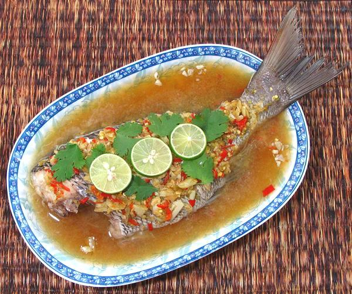
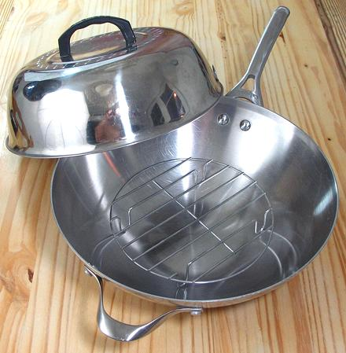
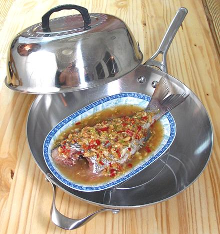
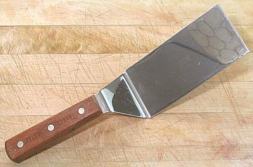

Steamed Fish as Served.

This is my fish steaming rig: a 13 inch Calphalon Wok,
outfitted with
a steamer grid and domed lid, both purchased at Asian markets in
Los Angeles. It can accomodate oval plates up to 11-1/2 inches.

Here is how it will go on the stove - but the plate of
fish won't go in
until the steamer rig is fully up to a boil. Strongly preheating the
steamer mimimizes the amount of condensation that becomes part of
the sauce.

Something like this can be invaluable for lifting the plate of steamed
fish out of the steamer (depending on your steamer configuration).
Of course it doesn't have to be as fancy as this $25 rosewood handled
Dexter taper bladed hamburger turner.